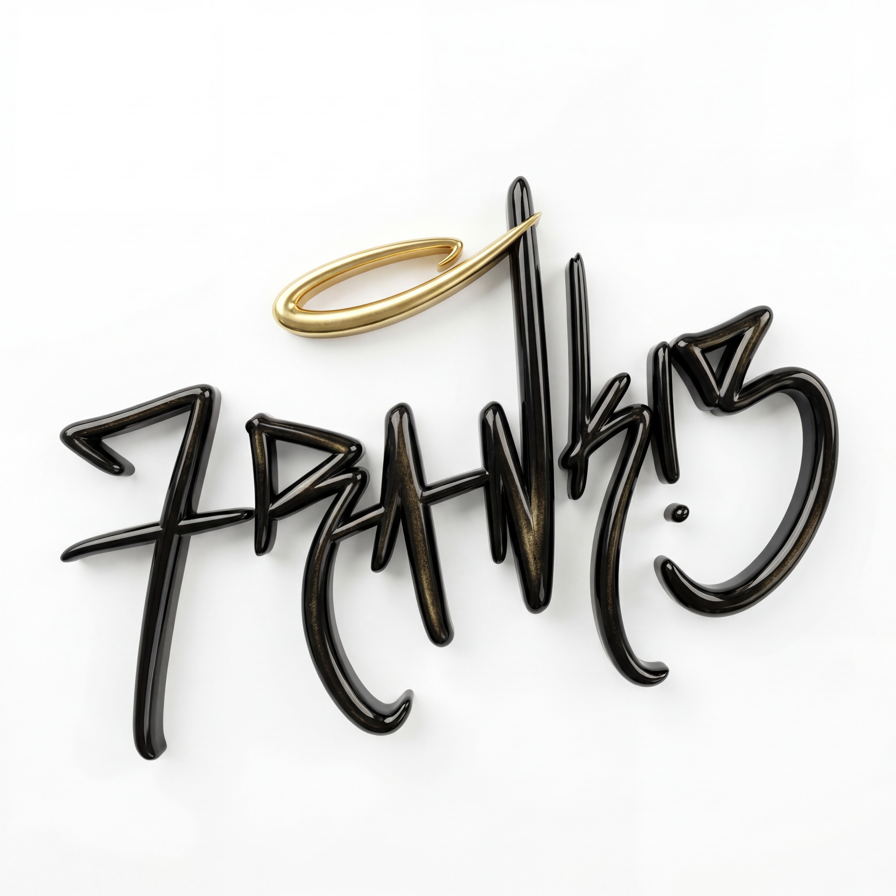

I am 30 years young, and I am proudly born and raised in the Coachella Valley. I identify as a neurodivergent and Latinx serial entrepreneur, artist, and activist. I am clinically diagnosed with ADHD and Bipolar 2, and I self-identify as autistic. I channel my neurodivergence into everything I do — from my EDM project ALYVE and digital art project BPLR, to my YouTube channel Frankie's World, where I document everything I'm building in real time. I recently completed the Generative AI Foundations for Creativity certification through College of the Desert & PaCE, scoring 956 out of 1000 on my Certiport exam. My professor recognized my capstone project as the most emotionally impactful in the class. Simultaneously, I'm pursuing my MBA in Entrepreneurship at Oneday, where I'm building two ventures: Coachella Valley Home Reset, a residential electrical company, and NeuroBoss, a productivity app designed specifically for neurodivergent entrepreneurs. My MBA mentor Eve recommended I add Data Engineering to my skill set through Code the Dream — so here I am. My goal is to combine all of these skills to fulfill a childhood dream of escaping poverty. But personal success is only part of the mission. I want to create structural change in my communities and help others find their way out too.